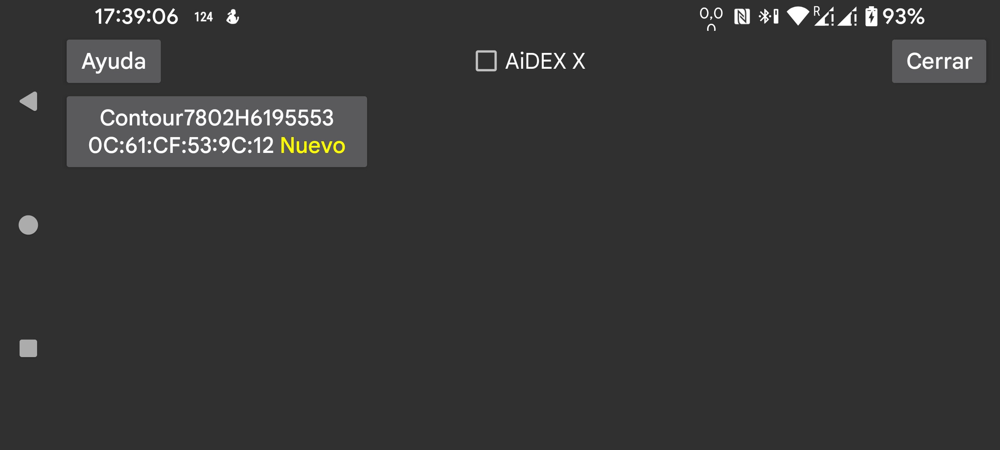

ar de es hi it ja nl ru uk uz en
Busca glucómetros. Los dispositivos encontrados se muestran aquí. Los dispositivos ya conectados no se volverán a detectar. La primera vez debes poner el glucómetro en modo de emparejamiento, por ejemplo encendiéndolo y manteniendo pulsado el botón hasta que parpadee una luz azul.
Cuando aparezca el dispositivo, tócalo y selecciona la variable de glucosa en sangre. Si los valores de este glucómetro ya están en Juggluco, puedes indicar que solo se añadan datos de glucosa a partir de una fecha posterior para evitar duplicados.
Pulsa Guardar para usar este glucómetro o Cancelar para no usarlo.
Si tienes un glucómetro Contour Next ONE, también puedes escanear su matriz de datos desde el menú izquierdo → Foto en lugar de seleccionarlo en esta lista.